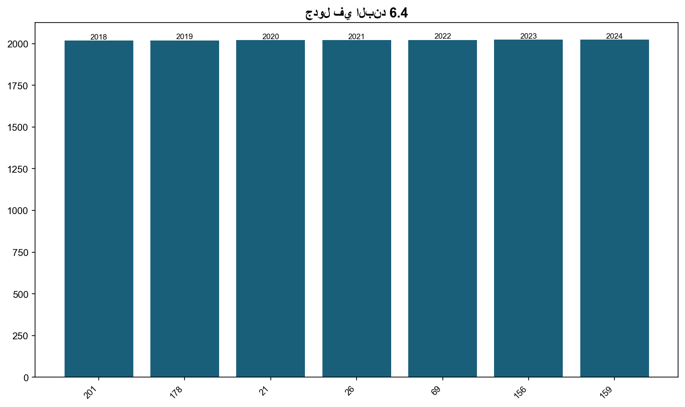

6.4: عدد الطلبة المشاركين في النشاطات اللامنهجية والتطوعية
📝 3 فقرة
📋 1 جدول
📊 1/0 شكل
تبنت الجامعة سياسة واضحة لخدمة المجتمع المحلي منذ تأسيسها، لتحقيق التكامل بين نشاطاتها الإدارية، والأكاديمية، والبحثية من جهة، والاهتمامات المجتمعية من جهة أخرى؛ لضمان استدامة البيئة الجامعية، ومحيطها. وتسعى الجامعة من خلال الأنشطة المنهجية واللامنهجية - التي تعقدها وتشارك فيها - إلى تشجيع الشراكة المجتمعية، والمساهمة في حلّ القضايا المجتمعية والبيئية، وضمان استدامة البيئة، ودعم الرفاه الاجتماعي. وتحرص الجامعة على إبراز دور الطلبة في خدمة المجتمع؛ وذلك بإدماجهم في أنشطة خدمة المجتمع، والعمل التط
هذا، وقد شارك في هذه النشاطات اللامنهجية والتطوعية والتي تخدم المجتمع المحلي في العام 2024 ما يقارب 2609 طالبًا وطالبة، بالمقارنة مع (1943) طالبًا وطالبة للعام (2023)، أي بزيادة بلغت 34.28%.
ويوضح الجدول أدناه إحصاءات للأنشطة اللامنهجية، التي دعمتها الجامعة منذ عام (2018) وحتى عام (2024(.

جدول
📊 7 صف من البيانات
| الأنشطة اللامنهجية | العام الأكاديمي |
|---|---|
| 201 | 2018 |
| 178 | 2019 |
| 21 | 2020 |
| 26 | 2021 |
| 69 | 2022 |
| 156 | 2023 |
| 159 | 2024 |